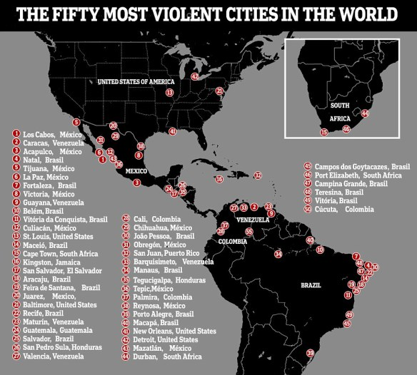

While this site is dedicated to celebrate the advancements of technology, in order to paint the full picture of the technology landscape world wide, we must take a look at the challenges each area of the world faces while developing it's technology.
North America
Slow policy execution and scalability are at the forefront of our challenges. The acceleration of other tech hubs world-wide threaten to take the thunder from North America leading innovation. Another concern is that defense technology is produced via a complex world network.
The competitveness of the rest of the world also poses a threat to North America's advancement in tech. Currently American government funded advancements in Artificial Intelligence and quantative science have not been innovative, significant, or scalable enough to stay competitive.
More government funding is needed to stay competitive and innovative. A lot of innovation occurs in universities, making them worthy areas to receive this increase in income.
America needs to make sure it has a strong pool of local and international talent. An important part of the conversation is making sure those who come to universities in the US from other countries have an easy time staying here.
China is viewed as potentially the biggest competitor and threat (due to past unfair trade policies) to innovation in the US. They also graduate 3 times as many STEM graduates as we do. They are also expected to be the leading funders of research by 2030. The US however, remains a central part of the international production. This helps make up for the financial differences.
This creates alliances which the US can use to its advantage. These will allow for developing a standard for innovation going forward.
The US also needs to develop a strategy for being a real leader in technology. If it fails to do this, not only might other countries become stronger defense threats, but America potentially no longer being seen as the leader of innovation can make the alliances it developed in the tech sphere be less beneficial since America will not be seen as the top country for innovation and ideas.
Read more about this here.
The above section and source article of course, soley focuses on America. However, how are things for Mexico? That question can be answered by looking at conditions on South America.
South America
Changes in environment, gross class inequalities, and increasing numbers of violent crimes all threaten the progression of Latin American technology.
Resource depletion and environmental destruction are the particular environmental threats to Latin America's technology innovation The loss in quantity and increasing of pricing increase the challenge of advancing in the technical world. Conflict born from these problems will only make the setback worse. This forces us to consider a new set of questions. If these issues can't be stopped, how can Latin America readjust to these difficult conditions and still thrive?
Man made contributions to climate change and the strain the international demands for international products cost on local environments and people are also a concern to deal with. Relatively large scale brain drain is also a threat to the advancement of Latin America's tech growth. Meanwhile locally, inequality makes governing the different areas in the region difficult. Financial distribution and ruling benefit are not equally distributed. Major life expectancy and quality increases around the world have made these inequalities more obvious. Ways to conquer these inequalities have proven to grow archaic and in some cases prove to be ineffective.
With that in mind the increase in violence in the area is still worrying.The less organized nature of present day violence makes it harder to pinpoint and stop. The new ways people use every day items to commit horrible crimes makes it hard to make laws that prevent these violent tragedies without stripping people of essential items and supplies. It's tough to determine what in society should be changed and what should remain the same.

Massive concentration of people on urban areas is the biggest source of pollution that troubles Latin America. Pollution comes from airborne pollution of course, but also poor sanitary infrastructure. Many don't even have access to running water because of this. Droughts have been getting worse and more frequent, making everything worse. This is overwhelming the systems in place making things more difficult. In non urban areas, deforestation and higher temperatures are a huge threat. Brazil particularly is struggling with this. The water in the Andes is being threatened. Higher temperatures also create worse outbreaks in diseases.
As with anywhere in the world, the people who suffer most are the poorest of the area.
South America has 25% of the world's freshwater. This is not impacted by climate change. As pointed out before however, water is very unevenly distributed throughout the continent. This may make water a very scarce, sacred commodity to bargin with.
How South America deals with it's struggles is very important, but things look difficult due to the concentrated urban population and poor governing infrastructure. On the bright side, the natural resources the continent do have are abundant, allowing people to live off these resources potentially even if completely isolated from the rest of the world.It proves this by being much less reliant on outside countries than other regions. This however has lead to South America to be stuck in the 19th century in it's progress in global trade. What it trades tends to be basic natural resurces / vegetation. It's trade network also only relies on North America and China which can pose a threat if those alliances break down for any reason.
Unequal seperate countries make the inequalities stronger due to worse political infrastructures being built. Recently things have gotten better in large part due to money transfer programs helping jumpstart local economies. Minimum wages have been increased as well.
Labor unions are being attempted, but are weak and/ or don't represent non-traditional workers so they end up not helping the inequalities.
The rate of improvement seems to have decreased in recent years. Cash transfers put too much of a strain on public funds to be a substainable ender of inequality. Also solving financial inequality doesn't touch other sources of inequality such as environment and housing. This has increase anxiety for politicians. The inequalities change peoples' perceptions of fairness and justice which impacts societal actions. One of these things that plays into politics is the organized violence in the region. Politicians use this to justify policies that violate human rights.
The rate of violence rates throughout the continent is vast. Dynamic family structure and crumbling societal structures contribute to this rate. How the goverment deals with drug markets are also an issue. The way the governmet of each country deals with these markets is by far the biggest gauger of the severity of the illegal drug market. These issues with violence control have gotten to a point where if someone witnesses a criminal act the average citizen is left to believe no police action will be taken. Confidence in the court system is also low so contract carryout probably won't happen.

Poor infrastructure does not help the overall situation. Part of this is caused by a significant amount of income being made by informal work making it difficult to collect taxes to build said infrastructure, This also makes it so workers cannot be properly protected. This decreases faith in the legtimacy in government itself.
If South America made it's trade more global, the money earned can lead to a huge boost in the economy Andes begin to solve the local issues. It also could help solve the illegal drug and arms selling that is already international anyway.
Read more about this here.
Asia
Asia's information technology is coming under much regulation. This makes it difficult for tech businesses in the regional and international market. Conducting business using user data for example, is a legal and very profitable business strategy in some countries in Asia, but comepletely illegal in other countries with high penalties. These legal differences across the continent give challenges for compliance teams and strategists all over.
Some countries have resorted to using political alliences to bypass these limitations to boost them up and also hurt other tech businesses through hostility from said alliance. On top of this, countries have resorted to data onshoring, using data security as an excuse for preventing data from crossing borders. These problems are arguably more prominent in customer facing jobs. Negative information spread in this climate is a lot more difficult to stop. People are influenced by competition to spread this misinformation but it makes this problem very obvious. Strategic positive campaigns about said product or business have proven capable of reversing the damage of negative campaigns.
This situation however emphasizes the importance of these social vulnerabilities being dealt with. These horrible tactics include implanting false data into businesses such as ordering fake taxi rides IP tampering, and even implanting fake employee moles. The hyper competitive nature of the tech market makes this a bigger threat but has also lead to efforts to stop these horrible acts to significantly increase.
Data security is also an issue that needs to be considered. This is especially important when local companies partner with overseas companies. Some companies have been helped by the government to overcome this obstacle but it doesn't change that this is a concern. Cyber criminals directly targeting companies ias also a threat. Fast growing and young tech companies are their biggest target, especially because young companies are likely to be less secure than more experienced companies. Factoring risk management becomes very costly and often requires restructuring of a company. This can impact any company of any size. This causes extra vulnerability to financial and intellectual property loss. In higher regulated sectors of the economy, a cyber attack can lead to a regulatory sanction or even loss of operating license.
Overseas companies that want to invest in these Asian companies need to factor in this regulatory risk cost. The timelines it takes to reach regulatory compliance needs to also be considered. Lastly, the cost of frequent changes needs to be considered.
Companies also need to have a deep understanding of how their rival companies operate and what threat they pose to that company and be able to develop campaigns to counter these threats. With the above mentioned threats, it's now more important than others. Keeping stakeholders engaged is also more important than ever. Case studies to study the effects of different scenarios before a major product release is also important.
It's a good idea for tech investors to do their research on companies to make sure they have proper cyber security measures in place. This needs to include making sure leadership and good oversight / planning is very important.
Read more about this here.
Australia
Consumer protection and privacy laws are the biggest concern in Australia. These improvements would allow people to have more control over the influences of tech companies in their lives.
Australia's consumer watch dog has suggested an inclusion of a right to request erasure of data from tech companies, choosing whether internet traffic is tracked, high fees for consumer companies that misuse consumer information. They should also face these fines if they have unfair private policies or policies that don't default to settings where the user's safety is top priority.Australians' concern about data misusage has been proven to be increasing with time. Privacy policies they are presented with are also too difficult to understand they feel. Companies have been revealed to have incentives to misuse consumer data by hiding their true objectives for the collected data. This prevents pushback. This also preserves companies power hold over markets, harms consumer, and worst of all it gives a negative incentive in creating competitive safe private policies.
What's worse is that pirvacy policies create obstacles for people to opt out of privacy violating practices. They conviniently leave out what really happens to users' information, taking away their real ability to choose. Some policies are even misleading.
Australia's Competition and Consumer Comission is investigating privacy practies of Facebook and Google under Australia Consumer Law. They've already took action against HealthEdge, a medical appointment booking app, for selling consumer information to insurance brokers. Consumers are often ignorant of the exact information that's being collected from them and the danger it can bring them. A report from the Consumer Policy Research Centre has revealed that these companies that take information from consumers, data analysts, data brokers, and data aggregators are companies people have never heard of. The information is even sold to political parties.
Data companies sort people into lists based on private information. The US FCC confirms this. Knowing which lists a user falls into are able to paint a whole picture about someone, down to what they do on a day to day basis.
The more times this happens, the bigger the risk consumers have to be harmed by this information distribution.
Right off the bat, this can lead to higher risks of fraud and identity theft. One in ten Australians fall victim to these crimes. Hihgher retial prices and insurance preniums can be encountered based off online activity. What's worse is this combined with information from other sources can lead to the most intimate information about a person being revealed.
Lists of sexual assault victims, those with sexually transmitted diseases, Alzheimers, demnentia, sexual impotence, and mental health issues have been revealed in US House of Representitive written testimony. There are even lists of people suceptible to buy things based off certain ads shown to them.
The ACCC finds that Australia's policies falls behind those of the EU and are a threat to peoples' trust in companies.

Laws used to deal with unfair contract terms can be used to help deal with unfair user data usage. this though only takes care of unfair terms in privacy policies. It's suggested therefore that, this policy get strengthened for both usages, by adding a high penalty. The government has acknowledged there is a need for vetter laws but has not taken action yet to solve this issue.
Read more about this here.
Africa
Debates are occuring all around the world about Huawei's involvement in the integration of 5G technology in Africa. Huawei is a Shenzhen, China based company. The US has applied pressure not to allow them to take part but the UK approved it. This due to US concerns that Huawei will act as an extended part of the Chinese government and will use this technology to spy on African countries in this case. Africans have other concerns about this development however.
Huawei built a majority of Africa's 4G infrastructure. They are suspected of to have sold technology to repressive governments due to "Safe City" initiatives, underminding human rights.
The safe city initiatives are Huawei's flagship security initiative to assist local governments keep areas safe. Over 700 cities, including many in China use these technologies.
Sub-Saharan Africa has 12 such Safe City initiatives so far throughout the area. Eight of those cities are in countries in that are deemed either only partially free or not free countries.
The biggest specific concerns are that facial recognition and social media monitoring via these systems will violate human rights.
Uganda alone spent $126 million dollars on facial recognition cameras alone. Ethiopia has used security technology from private companies for years to squash rebellions of the opressive government for years. Other companies have even accused Huawei of giving Uganda and Zambia technology to track opposition politicians in their country. Huawei, along with Ugandan and Zambian authorities have denied these claims.
When Huawei however, was asked if they would introduce safeguards to protect people's privacy, they responded by saying they don't write public policy, that's up to governments.Basically stepping away from any potential responsibilities of the bad that can come from misuse of their technology.They only sell the technology, they say.
Lack of regulatory safeguards and privacy legislation have drastically increased concerns over potentially privacy violating technology.Many African countries are still grappling with the fundamentals of privacy and data protection.
This raises questions of the compliance of international regulations, fairness and proportionate. The concern for violence and unrest are the justification for years of private company security being used.
Huawei uses decrease in crime rates to justify it's technology. They claimed many of the benefits are unknown to the general public since police keeps it secret for security reasons.
The lack of information about the performance of these technologies has raised concerns. The positives seem difficult to verify and grossly exaggerated.
Public safety vs human right violation impacts have continued to be highly debated topics. Increasingly sophisticated technology continuing to be introduced keeps these conversations alive. Better regulations and legal protections of human rights are needed, otherwise apprehension of these technologies will remain.
Read more about this here.Antartica
Increases in tourism are already worrying, given Antartica's delicate land and climate. The polution and animal hunting and endangerment humans offer to Antartica's ecosystems is tough enough to deal with. However, oil and gas developments potentially becoming allowed in the future will provide whole new threats to the area. Previously, the harsh climate and lack of suitable technologies left energy companies with little interest to pursue oil and gas procurement in the region.
Alaska's Northern slopes becoming a huge source for oil in recent history however, has raised concern for Antartica's potential future.
Australia demanding to have the ability to install military technology in the area also poses potential risks to Antartica's climate and animal inhabitants living there.
Read more about this here. and here.Europe
Europe faces challenges due to social media, advanced technology, and artificial intelligence. So much in fact, these challenges threaten Europe's power on the world stage.
Russia constantly is waging hybrid warfare using misinformation campaigns to win support for the pro-Moscow political forces. The Belt and Road operation is picking the brain of Europe's best engineers, and American technology and social media giants threatens to overwhelm Europe's economic affluance and ethical values. These companies pay little tax and threaten European data privacy. Europe has fallen behind in social media, ecommerce, and cloud computing. If Europe can't keep up, it will fall into a harsh economic decline. Europe is pursuing groundbreaking rules for the digital era. Tim Cook, Apple's CEO, has praised the EU for creating the most ambitious internet privacy law in the world, turning Europe into a role model for others to follow.
Innovation promotion is still lagging however. Banks are reluctant to loan money to companies that can't show proof of high levels of profitability up front. Also culturally, people seem less motivated to take risks and prefer safer life -long government careers that come with great perks. Fourtunately, some cities are starting to see the emergence of startup culture.
2007's recession still drives fear and uncertainty for many in the economy's strength. Europe must grow economically however because overseas countries are posing stronger and stronger threats to Europe's already poor economic health.
Russia aims to justify it's cyber warfare via the Gerasimov government on Europe and others, by justifying it as not war or peace, but a grayzone.
Putin is hoping to restore the Soviet Union's former sphere of influence.Back in 2007 Russia led a government debilating cyber attack on Estonia throwing Russia over scrutiny. They;ve continued to attack other European countries, and even the EU. Russia has proved it can potentially reach Putin's goals. Russia has done this using Western and Chinese technical platforms, preventing the cyber warfare from being costly. This, when combined with artificial intelligence makes the spreading of fake news easy and scalable.
This is in spite of Russia lagging behind in artificial intelligence research. Due to strategic campaigns, they only end up spending 12.5 million dollars on AI research per year and can still mangle US and European political elections.
Putin has also strengthened Russia's tech scene by calling for students to studty information technology and artificial intelligence, saying technology and AI is the future of humanity.
Russia's decisions are possibly partially influenced by Russia's dwindling popilation and oil reserves pushing Putin to desire a more vast sphere of influence. Video to Video Synthesis is also used for photo manipulation and videos. Due to Russia's attacks and influence in Germany, Germany ordered a complete overhaul on Parliment's computer system. Russia has also ran campaigns in Lativa and Estonia to encourage native Russians to hold protests there due to not fully recognized rights as citizens.
Putin has also used oil to leverage alliances with other European nations. Russia tends to use that to their political advantage. The West of course, has objected to all of Russia's malicious actions. Russia however, has responded using denial and dismissal of the accusations. Russia even helps allies hide their horrid crimes.
People want to know what the west will do about all of this, the West lack of answer makes people question if the West is doing similar crimes. The West has stepped up their actions in various huge efforts. It's so far been working but there is concern Russia will catch up and prevent these defensive responses from being effective. Many tech companies for example have joined in Paris Call for Trust and Security in Cyberspace to curve Russia's actions. Fifty countries have signed this agreement. Russia, China, and the US eem to refuse to give up their total sovereignty to sign up for these things. This leads to these to nations posing their own threats.
Europe is recognizing China's agressive tactics to take Europe's key technology and infrastructure. They've done this through strategic trade and aquisitions. China's investment in Europe ended up being nine times greater than the US. China seems to target companies conducting research in robotics and AI. Politicians are calling for measures to protect against China's agression.
After consulting with the US and other allies, Germany's foreign ministry is attempting to prevent Huawei, and other Chinese security / surveilance companies from participating in the implementation of 5G network infrastructure due to human privacy violation concerns. This helps shine light on Europe's ongoing fear that modern technology poses a threat to data privacy. In the latest EU State of the Union, Commision president Jean-Claude Juncker set forward a proposal for a foreign investment screening process for 28 EU nations. This will not completely squash China's threat, however.
Due to fears of being colonized by China or the US, Europe is seeing debates of whether to remain an open market, or make laws that create strong protective restrictions. Europe does have many tech companies but the desire to catch up have pushed Macron and Merkel to come up with a joint strategy.
France has top knotch schools but that talent often goes abroad. Macron hopes to fix this by making a stronger AI ecosystem. The EU unveiled the General Data Protection Regulation. This has majorly impacted how It impacts how data can be collected, used, and stored. It also includes a "right to be forgotten" allowing people to demand the erasure of their data. A high fine will be charged for violations. EU citizens demanded that EU holds tech companies responsible for hate crimes posted on their services. Germany passed a law demanding that social media companies remove this content within 24 hours or face daily large fines.
The EU understands that it's success relies on allianship and working with the US and hopes to continue to do so.
Read more about this here.